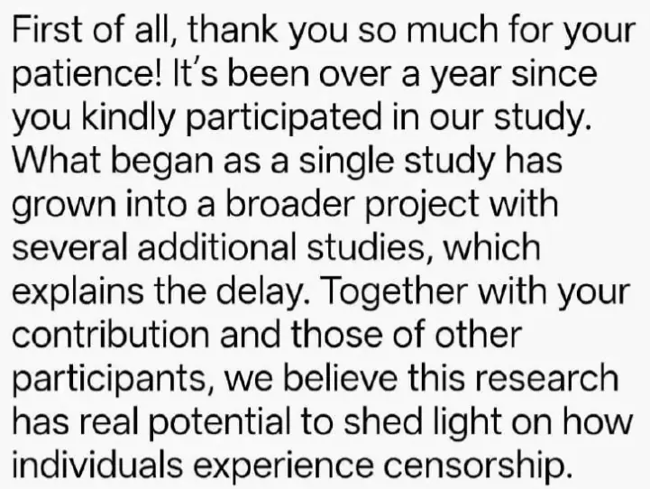

Prueba · Correo electrónico
Andrew Hales a Giltay, 1 de julio de 2025
El pasaje
«En primer lugar, ¡muchísimas gracias por su paciencia! Ha pasado más de un año desde que tuvo la amabilidad de participar en nuestro estudio. Lo que comenzó como un único estudio se ha convertido en un proyecto más amplio con varios estudios adicionales, lo que explica el retraso. Junto con su contribución y las de otros participantes, creemos que esta investigación tiene un potencial real para arrojar luz sobre cómo experimentan los individuos la censura». Página 1, el texto del mensaje. Traducido del inglés; el texto original figura a continuación.
Texto original
“First of all, thank you so much for your patience! It’s been over a year since you kindly participated in our study. What began as a single study has grown into a broader project with several additional studies, which explains the delay. Together with your contribution and those of other participants, we believe this research has real potential to shed light on how individuals experience censorship.” El correo electrónico está escrito en inglés.

Por qué importa este documento
En este correo electrónico del 1 de julio de 2025, Andrew Hales, profesor titular de psicología en la University of Mississippi, agradece a Giltay su participación. Explica que lo que comenzó como un único estudio se ha convertido en un proyecto más amplio con varios estudios adicionales, y escribe que esta investigación puede arrojar luz sobre cómo experimentan los individuos la censura. Dos días después, Giltay respondió que su cita sobre el efecto disuasorio de la censura estaba reproducida correctamente en el borrador del artículo. El ensayo sostiene que el caso de Giltay se ha incorporado a una investigación en curso sobre las consecuencias de la censura de libros.
Procedencia
- Documento
- Dos capturas de pantalla de Gmail: el mensaje de Andrew Hales y la respuesta de Giltay de dos días después, en la que hay dos pasajes tachados
- Remitente
- Andrew Hales, profesor titular de psicología, University of Mississippi (book.censorship@olemiss.edu)
- Destinatario
- Edwin Giltay
- Fecha
- 1 de julio de 2025, 16:25
- Asunto
- «Participant validation of draft paper» (validación del borrador del artículo por los participantes); el título del intercambio de correos tal como figura sobre la respuesta de Giltay
- Respuesta
- Edwin Giltay, jueves 3 de julio de 2025, 13:59, con el saludo «Dear Andrew, Julia, and Natasha» (estimados Andrew, Julia y Natasha)
- Idioma
- Inglés
- Conservado por
- Archivo del autor
Citado en: el ensayo «La prohibición cayó, el libro quedó en pie» en el capítulo (9) «Registrado para siempre».
Ficha de prueba: https://
Documento: https://
Modificado por última vez el 13 de septiembre de 2026, consultado el 26 de noviembre de 2026.

Esta página es una ficha de prueba del libro El general del encubrimiento de Edwin Giltay y del sitio web que lo acompaña.